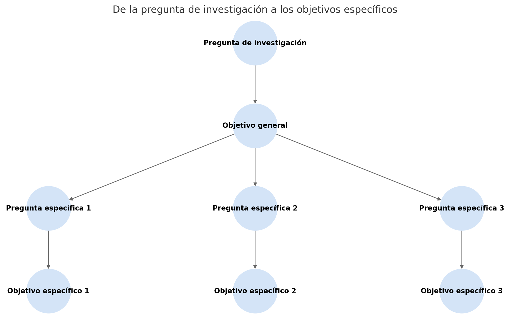

¿Cómo formular y analizar la pregunta de investigación?
2025-10-01
¿Qué es una pregunta de investigación?
- Es la interrogante central de un estudio.
- Sirve como guía del proceso investigativo.
- Debe ser:
- Clara y comprensible.
- Enfocada y precisa.
- Concisa y directa.
- Compleja, no responde sí/no.
- Discutible, con varias respuestas posibles.
Tipos de preguntas de investigación
| Tipo | Propósito | Ejemplo de pregunta |
|---|---|---|
| Descriptiva | Caracteriza un fenómeno | ¿Cuál es el perfil socioeconómico de los usuarios de internet en México? |
| Analítica | Examina relaciones entre partes | ¿Qué relación existe entre el nivel educativo y el uso de redes sociales? |
| Comparativa | Compara entre grupos o contextos | ¿En qué difiere la productividad de las PYMES en zonas urbanas frente a rurales? |
| Explicativa | Busca causas o razones | ¿Por qué algunos estudiantes abandonan la universidad en el primer año? |
| Predictiva | Anticipa comportamientos futuros | ¿Qué variables predicen la deserción escolar en preparatoria? |
| Proyectiva | Diseña soluciones | ¿Qué modelo de capacitación puede mejorar la alfabetización digital en adultos mayores? |
| Interactiva | Evalúa efectos de una intervención | ¿Qué impacto tiene un curso de programación intensivo en la empleabilidad de jóvenes? |
| Confirmatoria | Verifica hipótesis | ¿Se confirma que el consumo de cafeína mejora el rendimiento cognitivo? |
| Evaluativa | Mide resultados de programas | ¿Qué tan efectivo fue el programa gubernamental para reducir la obesidad infantil? |
Recomendaciones para formular la pregunta
Según Baena
Claridad, factibilidad y pertinencia
Pregunta precisa, que pueda responderse con los recursos disponibles y que sea relevante en el área.Pregunta verdadera y abierta
Debe referirse a un fenómeno real y permitir análisis más allá de un “sí/no”.Estudiar lo que existe o existió
Basarse en fenómenos actuales o pasados, no en escenarios hipotéticos sin evidencia.Basarse en el funcionamiento antes que en el cambio
Comprender cómo opera el fenómeno antes de plantear cómo modificarlo.
Ejemplos
- Claridad:
- Vaga: ¿Qué opinan de la salud?
- Clara: ¿Cuál es el nivel de acceso a servicios médicos en zonas rurales de Jalisco?
- Vaga: ¿Qué opinan de la salud?
- Abierta y verdadera:
- Cerrada: ¿El internet es bueno para estudiar?
- Abierta: ¿Cómo influye el uso del internet en el rendimiento académico universitario?
- Cerrada: ¿El internet es bueno para estudiar?
- Existente:
- Incorrecta: ¿Qué impacto tendrá la próxima pandemia en 2040?
- Correcta: ¿Qué impacto tuvo la pandemia de COVID-19 en la educación básica?
- Incorrecta: ¿Qué impacto tendrá la próxima pandemia en 2040?
- Funcionamiento antes que cambio:
- Cambio: ¿Qué política reduciría la contaminación?
- Funcionamiento: ¿Cómo se generan los niveles actuales de contaminación en la ciudad?
- Cambio: ¿Qué política reduciría la contaminación?
Relación con los objetivos
- La pregunta guía determina los objetivos.
- Los objetivos específicos deben responder la pregunta.
- No deben confundirse con actividades.
- Deben ser:
- Alcanzables,
- Medibles, y
- Observables.
Estructura sugerida para redactar objetivos
Ejemplo:
Analizar los patrones de consumo de información política en redes sociales por parte de estudiantes universitarios durante un periodo electoral.
Elementos clave:
- Verbo en infinitivo.
- Conceptos centrales.
- Sujeto o unidad de análisis.
- Contexto territorial o temporal.
Estructura sugerida para redactar objetivos
Ejemplo:
Evaluar el impacto de los programas de educación financiera en el ahorro de trabajadores del sector público en México durante 2023.
Elementos clave:
- Verbo en infinitivo: Evaluar
- Conceptos centrales: Impacto, programas de educación financiera, ahorro
- Sujeto o unidad de análisis: Trabajadores del sector público
- Contexto territorial o temporal: México, 2023
Estructura sugerida para redactar objetivos
Ejemplo descriptivo
Describir las estrategias de movilidad urbana utilizadas por estudiantes universitarios en Guadalajara durante 2024.
- Verbo en infinitivo: Describir
- Conceptos centrales: Estrategias de movilidad urbana
- Sujeto o unidad de análisis: Estudiantes universitarios
- Contexto territorial o temporal: Guadalajara, 2024
Ejemplo explicativo
Explicar la relación entre el nivel de actividad física y el rendimiento académico en estudiantes de preparatoria en Aguascalientes.
- Verbo en infinitivo: Explicar
- Conceptos centrales: Nivel de actividad física, rendimiento académico
- Sujeto o unidad de análisis: Estudiantes de preparatoria
- Contexto territorial o temporal: Aguascalientes
Ejemplo predictivo
Predecir el riesgo de abandono escolar en secundaria a partir de indicadores socioeconómicos y de desempeño académico en México.
- Verbo en infinitivo: Predecir
- Conceptos centrales: Riesgo de abandono escolar, indicadores socioeconómicos, desempeño académico
- Sujeto o unidad de análisis: Estudiantes de secundaria
- Contexto territorial o temporal: México
Verbos recomendados
- Exploratorios-Descriptivos: conocer, explorar, describir, identificar.
- Explicativos: analizar, demostrar, establecer, inferir.
- Predictivos: predecir, modelar.
- Evaluativos: evaluar.
De la pregunta a la hipótesis
- La hipótesis es la respuesta tentativa a la pregunta.
- Debe:
- Ser declarativa.
- Relacionar variables.
- Basarse en teoría.
- Ser clara, breve y verificable.
Contextualización del problema
- Espacial: zona, región, país, mundo.
- Temporal: pasado, presente, futuro.
- Factores internos/externos: sociales, económicos, políticos.
Obstáculos comunes
- Acceso a datos.
- Recursos materiales.
- Tiempos personales.
- Costos logísticos.
- Factores personales.
Desglose de la pregunta general
- La pregunta general es el hilo conductor del proyecto.
- Desglosarla permite abordar distintas dimensiones del fenómeno.
- Cada pregunta específica:
- Es coherente con la general.
- Profundiza en un aspecto.
- Corresponde a un objetivo específico.
Criterios para las preguntas específicas
- Coherencia: vínculo con la pregunta general.
- Focalización: aborda una sola dimensión o variable.
- Viabilidad: factibles con recursos y tiempo.
- No confundir con actividades.
Ejemplo práctico 1: Salud pública
Pregunta general:
¿Qué factores influyen en la baja tasa de vacunación contra la influenza en adultos mayores?
Preguntas específicas:
- ¿Cómo afecta el nivel de información sobre la vacuna en la decisión de vacunarse?
- ¿Qué barreras logísticas enfrentan los adultos mayores para acceder a los centros de salud?
- ¿Qué papel juega la percepción de riesgo frente a la influenza en la aceptación de la vacuna?
Ejemplo práctico 2: Cambio climático y agricultura
Pregunta general:
¿Cómo ha afectado el cambio climático a la producción de maíz en comunidades campesinas del altiplano?
Preguntas específicas:
- ¿Qué cambios en los patrones climáticos han percibido los productores en los últimos diez años?
- ¿Cómo han variado los rendimientos de maíz en relación con las variaciones de temperatura y precipitación?
- ¿Qué estrategias de adaptación están utilizando los agricultores ante estos cambios?
Ejemplo práctico 3: Comunicación digital
Pregunta general:
¿Qué impacto tienen las redes sociales en la participación política de jóvenes universitarios?
Preguntas específicas:
- ¿Qué tipos de contenidos políticos consumen los estudiantes en redes sociales?
- ¿Cómo se relaciona el uso de redes sociales con su nivel de involucramiento en acciones políticas presenciales?
- ¿Qué percepción tienen los jóvenes sobre la efectividad de las redes sociales como medio de expresión política?
Ejemplo práctico4: Educación
Pregunta general:
¿Qué factores inciden en el abandono escolar en estudiantes de secundaria en zonas rurales?
Preguntas específicas:
- ¿Cuál es el papel de las condiciones socioeconómicas en el abandono escolar?
- ¿Qué relación existe entre el acceso al transporte escolar y la asistencia regular?
- ¿Cómo influye la percepción del valor de la educación en la decisión de continuar o no los estudios?
Actividad en clase
- Escribe tu pregunta general.
- Desglósala en tres preguntas específicas.
- Asegúrate de que:
- Aborden distintas dimensiones del problema.
- Sean viables y claras.
- No sean actividades operativas.
- Comparte con tus compañeros y den retroalimentación.
Pregunta general:
¿Cómo veneficia el hoy no circula a la disminución de contaminación ambiental?
Preguntas específicas:
- ¿Qué propoción de autos deja de circular cuando hay un hoy no circula?
- ¿Cómo influye la responsabilidad social en la utilización de automóvil?
- ¿cómo es la satisfacción de los usuarios del transporte público como alternativa al uso del auto?
Taxonomía de Bloom: Aplicación en la formulación de preguntas
- La Taxonomía de Bloom permite clasificar los niveles cognitivos de las preguntas.
- Utilizarla ayuda a diseñar preguntas de investigación y objetivos más completos y rigurosos.
Niveles Cognitivos según Bloom
| Nivel | Descripción | Verbos clave |
|---|---|---|
| Recordar | Evocar hechos o conceptos. | enumerar, recordar, identificar |
| Comprender | Mostrar entendimiento. | explicar, resumir, clasificar |
| Aplicar | Usar información en nuevas situaciones. | usar, implementar, ilustrar |
| Analizar | Descomponer en partes, entender relaciones. | comparar, distinguir, inferir |
| Evaluar | Emitir juicios fundamentados. | justificar, criticar, valorar |
| Crear | Producir ideas o productos originales. | diseñar, planear, proponer |
Ejemplos de preguntas de investigación según Bloom
- Recordar: ¿Cuáles son los antecedentes históricos del fenómeno que investigas?
- Comprender: ¿Cómo se ha definido y comprendido el concepto principal en la literatura previa?
- Aplicar: ¿Cómo puede utilizarse el marco teórico X para analizar el caso que estudias?
- Analizar: ¿Qué elementos componen el problema de investigación y cómo se relacionan entre sí?
- Evaluar: ¿Qué tan válidos son los enfoques metodológicos utilizados en investigaciones anteriores sobre este tema?
- Crear: ¿Cómo podrías formular una nueva pregunta de investigación a partir de las brechas identificadas en los estudios existentes?
Desarrollo de la pregunta general en seis niveles de Bloom
Pregunta general original:
¿Qué impacto tienen las redes sociales en la participación política de jóvenes universitarios?
- Recordar
¿Qué redes sociales son más utilizadas por los jóvenes universitarios?
- Comprender
¿Cómo describen los estudiantes universitarios el papel de las redes sociales en su vida política?
- Aplicar
¿Cómo aplicarías un cuestionario digital para conocer los hábitos de consumo de contenido político en redes sociales?
- Analizar
¿Qué relación existe entre el tiempo de uso de redes sociales y el nivel de participación política presencial?
- Evaluar
¿Qué tan efectivas consideran los jóvenes las redes sociales para influir en decisiones políticas reales?
- Crear
¿Cómo diseñarías una campaña en redes sociales que promueva una mayor participación política estudiantil?
Contaminación ambiental: Niveles de Bloom
Pregunta general de investigación:
¿Cómo afecta la contaminación del aire a la salud de los habitantes de zonas urbanas?
Niveles de la Taxonomía de Bloom aplicados
- Recordar
¿Qué tipos de contaminantes atmosféricos se han registrado históricamente en zonas urbanas?
- Comprender
¿Cómo explican los habitantes de zonas urbanas los efectos de la contaminación en su salud?
- Aplicar
¿Cómo se podrían aplicar herramientas de monitoreo ambiental para identificar focos de contaminación?
- Analizar
¿Qué relación existe entre los niveles de contaminación y la incidencia de enfermedades respiratorias?
- Evaluar
¿Qué tan efectivas han sido las políticas públicas para reducir los efectos de la contaminación en la salud?
- Crear
¿Cómo diseñarías un programa comunitario para mitigar los efectos de la contaminación del aire en una ciudad?
Actividad didáctica
Elige una pregunta general de investigación y redáctala en seis niveles diferentes, uno por cada categoría de Bloom. Esto te permitirá:
- Enriquecer el análisis del problema.
- Detectar áreas de oportunidad metodológica.
- Formular objetivos más precisos y variados.
De la pregunta a la hipótesis
A partir de la pregunta general de investigación se construye la hipótesis general, que se redacta como una afirmación que responde, de manera anticipada, a dicha pregunta.
También se pueden construir hipótesis específicas, cada una derivada de una pregunta específica.
Es importante que las hipótesis estén relacionadas con las preguntas y los objetivos y que estén en concordancia con la Taxonomía de Bloom.
¿Cómo redactar hipótesis?
- Redactar en forma afirmativa.
- Establecer una relación entre variables.
- Estar sustentadas teóricamente.
- Ser claras y operables.
- Ser comprobables empíricamente.
Ejemplo: Redes sociales y participación política
Pregunta general:
¿Qué impacto tienen las redes sociales en la participación política de jóvenes universitarios?
Hipótesis general:
El uso frecuente de redes sociales incrementa la participación política de jóvenes universitarios.
Preguntas específicas:
- ¿Qué tipos de contenidos políticos consumen los estudiantes en redes sociales?
- ¿Cómo se relaciona el uso de redes con el nivel de participación presencial?
- ¿Qué percepción tienen los jóvenes sobre la efectividad de las redes sociales como medio político?
Hipótesis específicas:
- Los estudiantes que consumen contenido político en redes sociales muestran mayor interés en temas públicos.
- A mayor frecuencia de interacción política en redes, mayor participación en actividades presenciales.
- Los jóvenes perciben las redes sociales como un medio efectivo para expresar posturas políticas.
Ejemplo aplicado: Contaminación ambiental y salud
Pregunta general:
¿Cómo afecta la contaminación del aire a la salud de los habitantes de zonas urbanas?
Hipótesis general:
La exposición constante a contaminantes atmosféricos incrementa la incidencia de enfermedades respiratorias en la población urbana.
Preguntas específicas:
- ¿Qué contaminantes atmosféricos predominan en la zona de estudio?
- ¿Cuál es la relación entre los niveles de exposición a contaminantes y la frecuencia de afecciones respiratorias?
- ¿Qué estrategias de mitigación aplican las autoridades locales y cómo impactan en la salud poblacional?
Hipótesis específicas:
- Las zonas urbanas con mayor densidad vehicular presentan concentraciones elevadas de dióxido de nitrógeno y material particulado.
- A mayor concentración de contaminantes, mayor incidencia de enfermedades respiratorias agudas en la población.
- Las estrategias de mitigación ambiental implementadas por autoridades locales reducen la frecuencia de problemas respiratorios.
De la pregunta de investigación a los objetivos específicos
Este diagrama muestra cómo la pregunta guía de investigación se desglosa en objetivos generales y específicos, ayudando a estructurar claramente el enfoque del estudio.
Actividad didáctica
Elige tu pregunta general de investigación y redacta:
- Una hipótesis general como afirmación que responde a la pregunta.
- Tres hipótesis específicas, alineadas con las preguntas específicas.
- Verifica que tus hipótesis estén en los niveles “Aplicar” o “Analizar” de la Taxonomía de Bloom.